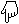

Tor Mindrebø
Guttorm Andreasen
Pål Hilmar Sollie
Britt Kristoffersen
Endre Ruset
Mari Nymoen
Linn Cathrine Martinsen
Fredrik Østbye
Hans Jørgen Varfjell
Andre Espelien
Manuela Hofer
Katinka Kim Nielsen
Ove Eriksen
Cia Maria Giske
Mette Eriksen
Arne Stav
Sigrid Marie Refsum
Silje Strand
Morten Skogly
Sebastian Trosh
Åshild Østtveit Odéen
Fie Mydland Carlsen
Se også:
Antologier
Send diktene dine til
red@poetikon.org